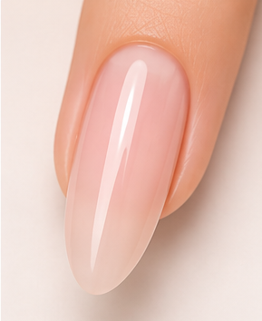
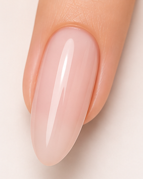
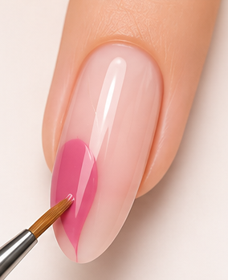
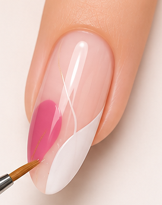
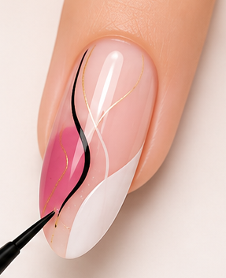
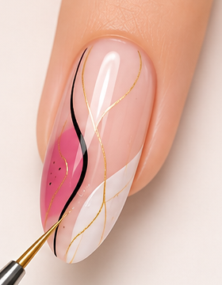
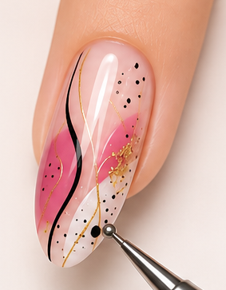
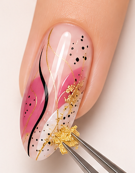
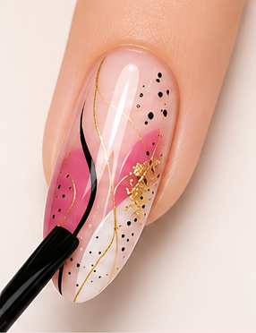
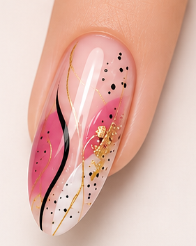

Step-by-step tutorial to create elegant abstract nails with pink, black and gold details.
Create elegant abstract swirl nails with soft pink curves, glossy finishes, and modern artistic details

Start with clean nails and apply a clear base coat.

Apply a soft nude pink color and cure properly.

Paint abstract pink curves on the nail.

Add white abstract sections for contrast.

Draw thin black curved lines carefully.

Add elegant gold lines and accents.

Add tiny black dots for abstract texture.

Apply small gold foil pieces for shine.

Seal the design using glossy top coat.

Your beautiful abstract nail art is ready.